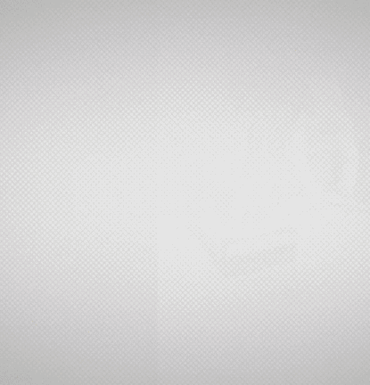
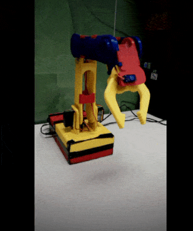
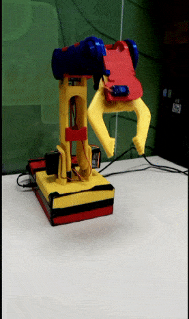
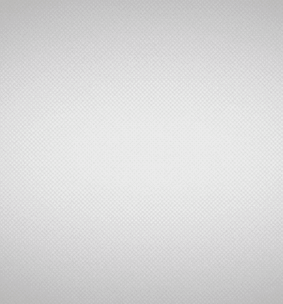
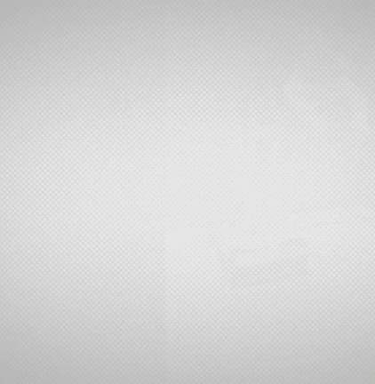
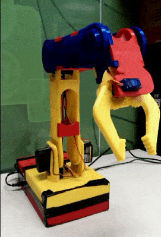
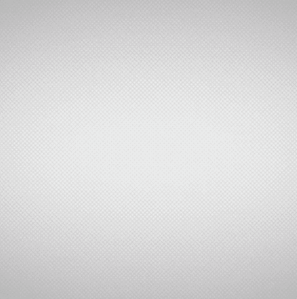
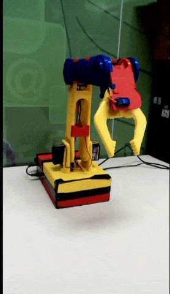
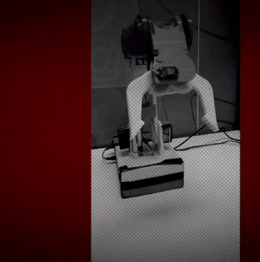

<md-dialog aria-label="Imagens">
  <form ng-cloak>
    <md-toolbar>
      <div class="md-toolbar-tools">
        <h2>{{ $ctrl.title }}</h2>
      </div>
    </md-toolbar>
    <md-dialog-content ng-switch="$ctrl.title">
      
      <div ng-switch-when="Instruções" layout="column" layout-align="center center">
        
        <h3>Girar base p/ esquerda</h3>
        
        <h3>Girar base p/ direita</h3>
        
        <h3>Girar ombro p/ frente</h3>
        
        <h3>Girar ombro p/ trás</h3>
        
        <h3>Girar cotovelo p/ frente</h3>
        
        <h3>Girar cotovelo p/ trás</h3>
        
        <h3>Girar punho p/ frente</h3>
        
        <h3>Girar punho p/ trás</h3>
        
        <h3>Abrir a garra</h3>
        
        <h3>Fechar a garra</h3>
        
      </div>
      <div ng-switch-when="Desafios" style="padding: 5px 20px">
        <p>
          1-Desafio da Cesta de Baskete: desenvolver um código para que o braço robótico movimente-se do seu ponto
          inicial e vá até o encontro da bola, posicionada no centro da arena e leve a mesma até uma cesta de basquete,
          que encontra-se ao lado direito do robô no cenário.
        </p>
        <p>
          2-Desafio da Argola: desenvolver uma sequência de códigos para que o braço recolha a bola do seu ponto
          inicial e passe a mesma por dentro de um argola no sentido "fora para dentro", ou seja que a bola passe
          por entre a argola e vá ate o seu ponto de origem. A argola está situada ao lado esquerdo do robô.
        </p>
        <p>
          3- desenvolver uma sequencia de códigos que realise os dois desafios anteriores em uma só programação.
        </p>
      </div>
      <div ng-switch-when="Questionário">
        <iframe
          src="https://docs.google.com/forms/d/e/1FAIpQLSd6hxyig5cNtU8IcvY-mQdB_ykvkPJZ2SiKYf50nGd8qmMRLw/viewform?embedded=true"
          width="760" height="400" frameborder="0" marginheight="0" marginwidth="0">
          Carregando...
        </iframe>
      </div>
    </md-dialog-content>
    <md-dialog-actions layout="row">
      <span flex></span>
      <md-button ng-click="$ctrl.fechar()">
        Fechar
      </md-button>
    </md-dialog-actions>
  </form>
</md-dialog>
